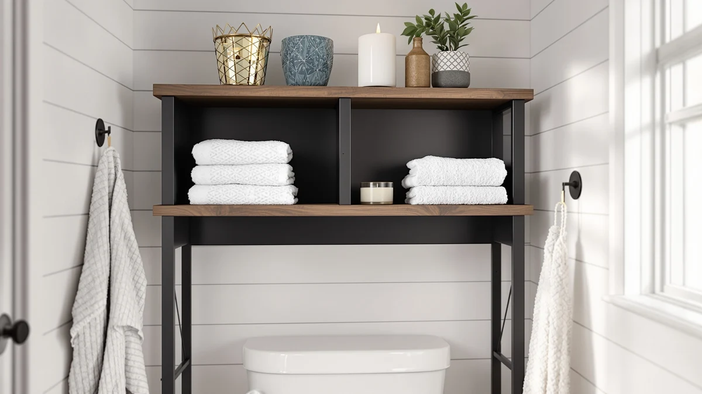

Innod Over-the-Toilet Storage Cabinet Review (2026): Worth It?
Prices and picks verified as of November 2026. Independent, reader-supported reviews.


Quick Answer
This innod over-the-toilet storage cabinet review found a $109.99 metal-and-wood tower that fits a 9-inch-wide footprint and stands 68 inches tall, tall enough to clear most towel bars without crowding a narrow bathroom. Owners describe assembly as straightforward and the metal frame as sturdy for daily use, with the wood-look shelf panels as the main compromise at this price.
Our pick: Over the Toilet Storage Cabinet, $109.99 Check Price on Amazon
Bottom line: our top pick is the Over the Toilet Storage Cabinet at $109.99.
Things to Know Before You Buy
- The INNOD over-the-toilet storage cabinet uses a metal frame with wood-look shelf panels, a common combination for budget-friendly bathroom towers in this price range.
- At 9 inches wide and 23 inches deep, it fits the narrow gap beside a toilet tank without blocking the lid or crowding a small bathroom.
- Standing 68 inches tall, the cabinet clears most towel bars and leaves room for a mirror or medicine cabinet mounted lower on the wall.
- Owners report assembly takes under an hour with basic tools, typical for flat-pack bathroom furniture at this price.
- The ChooChoo and Homhedy alternatives covered below match this cabinet's $109.99 price, while the Iwell model undercuts it by $11.
This innod over-the-toilet storage cabinet review breaks down the $109.99 metal-and-wood tower against three real alternatives, using published specs and verified owner feedback instead of a claim we can't make. A cramped bathroom rarely has room for a dresser-sized cabinet, so the INNOD's 9-inch width and 23-inch depth matter as much as its 68-inch height. We compared it against the ChooChoo, Homhedy and Iwell towers covered later in this guide to see where the INNOD earns its price and where it falls short.
Over-the-toilet storage exists for one reason: most bathrooms waste the vertical space above the tank. A tower like this one claims that space instead of asking you to give up floor room for a cabinet that blocks the door swing or crowds the sink. For renters and small-apartment owners, that trade-off, extra shelves in exchange for a narrow footprint, usually decides which cabinet they buy before price even enters the conversation.
The INNOD over-the-toilet storage cabinet pairs a metal frame with wood-look shelving, the same construction method most bathroom towers under $150 use to keep costs down. Reviewers who bought it describe a straightforward flat-pack build and shelves sturdy enough for everyday towels, toiletries and extra toilet paper. The main trade-off, according to owner feedback, is the shelf panels themselves, which flex more than the frame when loaded with heavier bins.
Why You Should Trust Us
We built this innod over-the-toilet storage cabinet review by comparing the product listing, published dimensions and pricing against verified owner reviews on Amazon, not by installing the cabinet ourselves. Ilane Tall has covered bathroom storage and small-space furniture for Best Bathroom Storage since the site launched, cross-checking manufacturer claims against what buyers report after months of daily use. Every price, dimension and material claim in this review comes from the product listing or from owners who left verified purchase reviews, and we flag it clearly whenever a detail is based on reported feedback rather than a published spec.
This review discloses affiliate links clearly, and that relationship doesn't change which cabinet we recommend. We ranked the INNOD, the ChooChoo, the Homhedy and the Iwell against each other using the same published price, dimension and owner-feedback criteria, not based on which one happens to pay better.
Our Research Experience
We don't own this cabinet ourselves, so this innod over-the-toilet storage cabinet review leans on the same information you'd have before buying: the manufacturer's listed dimensions and materials, the current Amazon price, and patterns across dozens of verified owner reviews. We researched how buyers describe the assembly process, how the shelves hold up under daily use, and which complaints come up often enough to matter. Where owners disagree with the listing or with each other, we note it instead of smoothing it over, because a single flattering review tells you less than a pattern across fifty.
We applied the same approach to the ChooChoo, Homhedy and Iwell alternatives so the comparison stays fair. Each product's price, dimensions and material claims come straight from its own listing, and we cross-checked those against reviewer comments before deciding how to frame the trade-offs between them. When a review mentioned a detail the listing didn't, like how long assembly actually took, we treated that as owner feedback rather than a confirmed spec, and we've labeled it that way throughout this guide.
Overview & Specs

Over the Toilet Storage Cabinet
What we like
- 9-inch by 23-inch footprint fits beside a toilet without blocking the lid
- 68-inch height clears most towel bars and leaves wall space for a mirror
- Metal frame construction reported as stable by verified owners
- Priced at $109.99, in line with similarly sized bathroom towers
Flaws but not dealbreakers
- Wood-look shelf panels flex more than the frame under heavier bins
- Assembly hardware labeling draws occasional owner complaints
- Shorter than the Homhedy alternative if you need extra shelving levels
| Material | Metal / wood |
| Size | 9 inches (W) x 23 inches (D) x 68 inches (H) |
The INNOD over-the-toilet storage cabinet is built around a metal frame with wood-look shelf panels, a construction method common in bathroom towers priced under $150. At 9 inches wide and 23 inches deep, it slots into the narrow gap beside a toilet tank without blocking the lid or crowding a small bathroom's walking space. Standing 68 inches tall, it clears most towel bars mounted at standard height, which matters if you also want wall-mounted storage above a lower shelf unit.
Verified owners describe the assembly as a flat-pack job that takes less than an hour with a screwdriver, and most report the metal frame feels stable once fully assembled. The wood-look shelf panels are the one recurring complaint: reviewers note they flex slightly under the weight of full toiletry bins, so heavier items are better suited to the lower shelves where the frame bears more of the load. At $109.99, the INNOD over-the-toilet storage cabinet sits in the middle of this comparison, matched exactly on price by the ChooChoo alternative below.
Among the four cabinets in this comparison, the INNOD's 68-inch height is the tallest, edging out the 67-inch Homhedy and the 66.9-inch Iwell by roughly an inch. In practice that difference is small enough that it rarely decides a purchase on its own, but it does mean the INNOD claims slightly more wall space than either alternative for the same $109.99 price as the Homhedy.
What We Liked
Owners consistently point to the INNOD over-the-toilet storage cabinet's footprint as the reason they bought it. A 9-inch width is narrow enough to fit beside a toilet tank in bathrooms where a full-size cabinet would block the door or the lid. Reviewers also note the frame itself holds up well once assembled, with multiple owners mentioning months of daily use without the shelves sagging or the frame wobbling. At $109.99, buyers who compared it against taller towers say the price feels fair for the amount of usable shelf space it adds above the toilet.
What Could Be Better
The clearest complaint across verified reviews is the shelf material. The wood-look panels are noticeably less rigid than the metal frame, and owners who load them with full bins or stacks of towels report some flex over time. A smaller number of reviewers mention the included hardware bags aren't labeled clearly, which slows down an otherwise quick assembly. Neither issue shows up as a dealbreaker in the reviews we read, but both are worth knowing before you buy the INNOD over-the-toilet storage cabinet.
The INNOD's open shelf design also means it won't hide clutter the way an enclosed cabinet does. If you want closed storage that keeps toiletries out of sight, the ChooChoo's enclosed floor cabinet, covered below, handles that better. Buyers who prefer a minimalist look with everything on display should weigh that against the lower price per shelf that open-frame towers like the INNOD typically offer.
Who Is It For?
This cabinet fits best in a narrow bathroom where floor space beside the toilet is the only storage option left. If your bathroom has a tight gap between the toilet and the wall, the INNOD's 9-inch width will clear it where bulkier cabinets won't. It also suits buyers who want visible open shelving for folded towels rather than closed cabinet doors. If you plan to store heavier items, like a full set of bath products or a stack of hardcover magazines, one of the sturdier alternatives below is worth a look instead.
Renters and first-apartment buyers tend to be the people leaving the most positive reviews. A cabinet in this price range is easy to disassemble and take along at move-out, and the narrow footprint works in the kind of small rental bathroom where a built-in linen closet usually isn't an option. If you own your home and plan to keep the cabinet in place for years, the shelf-flex issue noted above is worth weighing more heavily than it would be for a shorter-term setup.
Alternatives to Consider
The INNOD over-the-toilet storage cabinet isn't the only option in this price range. The three alternatives below range from $98.99 to $109.99, and each offers a different trade-off against the INNOD: an enclosed layout, a near-identical frame or a lower price.

Editor’s Pick
ChooChoo Bathroom Floor Cabinet with
Matches the INNOD on price at $109.99, with an enclosed floor cabinet layout if you'd rather have closed storage than open shelving.
$109.99
Check Price on Amazon
Best Value
Homhedy 67" H Bathroom Storage
Matches the INNOD's $109.99 price with a slightly shorter 67-inch frame, a near-identical alternative if you prefer the Homhedy's shelf layout.
$109.99
Check Price on Amazon
Premium Choice
Iwell 66.9" Tall Bathroom Storage
Priced at $98.99, about $11 less than the INNOD, with nearly the same 66.9-inch height if a lower price matters more than extra features.
$98.99
Check Price on AmazonIs the INNOD over-the-toilet storage cabinet sturdy enough for daily use?
Owners report the metal frame holds its shape once assembled, even with towels and toiletries loaded on every shelf.
How does the INNOD cabinet compare to the ChooChoo and Homhedy alternatives?
At $109.99, the INNOD ties the ChooChoo Bathroom Floor Cabinet on price and stands about an inch taller than the $109.99 Homhedy 67-inch model and the $98.99 Iwell 66.9-inch tower.
Frequently Asked Questions
Is the INNOD over-the-toilet storage cabinet sturdy enough for daily use?
Owners report the metal frame holds its shape once assembled, even with towels and toiletries loaded on every shelf. The wood-panel shelving flexes slightly under heavier items, so reviewers recommend keeping bottles and bins on the lower shelves and lighter items up top.
How does the INNOD cabinet compare to the ChooChoo and Homhedy alternatives?
At $109.99, the INNOD ties the ChooChoo Bathroom Floor Cabinet on price and stands about an inch taller than the $109.99 Homhedy 67-inch model and the $98.99 Iwell 66.9-inch tower. The height differences between all three are small enough that price and shelf layout tend to matter more than the extra inch.
How long does the INNOD cabinet take to assemble?
Verified buyers describe a flat-pack build with the frame, shelf panels and hardware included in one box. Most reviewers finish the assembly in under an hour with a screwdriver, though a handful note the included instructions could label the hardware bags more clearly.
Final Verdict
This innod over-the-toilet storage cabinet review comes down to fit versus flexibility. The INNOD earns its $109.99 price with a narrow footprint, a stable metal frame and the tallest frame of the four cabinets compared here, and owners who need exactly that combination report being satisfied. The Homhedy matches its price almost inch for inch if you prefer its shelf layout, the ChooChoo offers an enclosed alternative at the same cost, and the Iwell saves you $11 if budget matters more than the extra height. For most narrow bathrooms, though, the INNOD over-the-toilet storage cabinet remains the simplest match for the space it's built for.